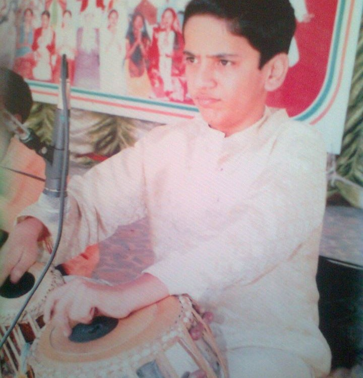
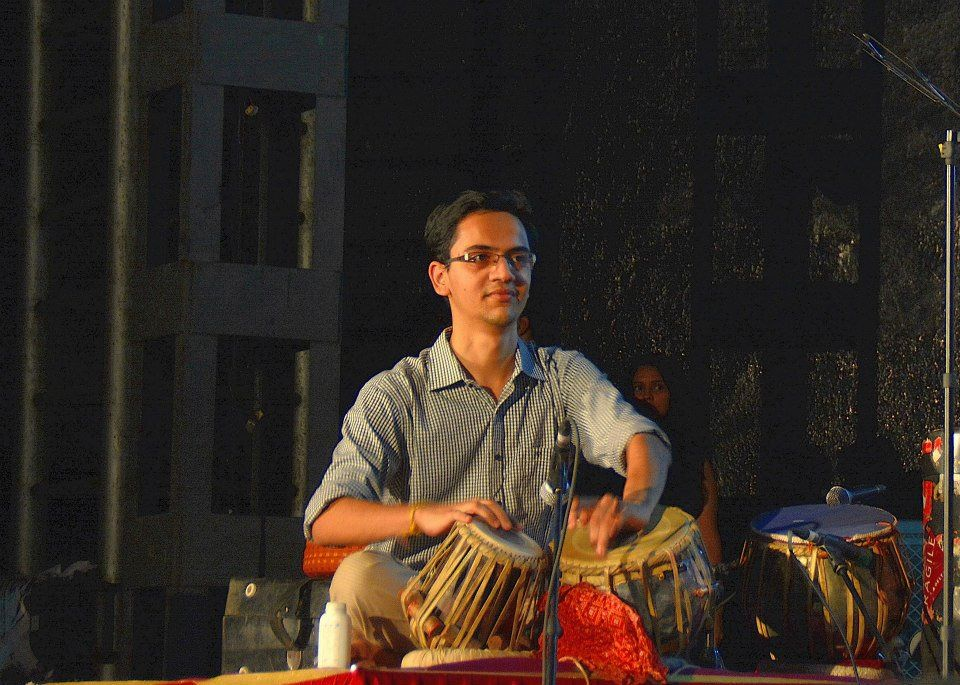

I have also been playing the Piano in my leisure time and always carry the gift of Beat-Boxing with me! You can find some of my performances on YouTube here:
Nowadays, I make deep networks smaller, more efficient and hardware-friendly working as a Research Engineer at Qualcomm AI Research. I graduated with a Masters in Computer Science from the University of Michigan, Ann Arbor. And before that, I majored in Electrical Engineering and minored in Computer Science from Indian Institute of Technology (IIT), Bombay. My primary interest lies in the intersection of Computer Vision and Model Efficiency. But I am also concurrently concerned about the data efficiency of today's training methods and hence, am exploring the areas of few-shot learning and meta-learning.
Yash Bhalgat, Zhe Liu, Pritam Gundecha • NAACL Industrial track 2019 (submitted)
Yash Bhalgat, Meet P. Shah, Suyash Awate • NIPS Workshop in Medical Imaging 2019 (Accepted)
Yash Bhalgat, Laurent Duval, Jean Charlety • ICASSP 2018 (Accepted)
Parmeshwar Birajadar, Yash Bhalgat, Vikram Gadre, et. al. • International Journal of Biometrics (submitted)
Parmeshwar Birajadar, Yash Bhalgat, Vikram Gadre • Pattern Recognition Letters (attempting rebuttal)
Yash Bhalgat, Mandar Kulkarni, Shirish Karande, Sachin Lodha • 12th IAPR workshop on Document Analysis and Systems (DAS), Greece, 2016.
Machine Learning Software Developer Intern, Guide: Zhe Liu, Pritam Gundecha
Task-agnostic classification in the presence of label noise using semi-supervised learning
Built deep learning and ensemble frameworks to integrate weakly-labelled and high-quality training samples. Proposed a teacher-student learning based paradigm for tri-training for efficient utilization of unlabeled data sources while training. Paper being submitted to the NAACL Industrial track.
Research Intern, Guide: Laurent Duval
Categorization of seismic structures with scattering wavelet networks
Proposed a methodology to give deformation invariant features with a tessellation of geophysical images, followed by feature selection. Work accepted as a Poster presentation at ICASSP 2018
Research Intern, Guide: Vikas Raykar
Joint multi-modal representations for e-commerce catalog search by visual attributes
Used CorrNets, an autoencoder-based architecture, to learn the joint representation for images and captions. State-of-art results for large fashion catalogues search without manual tagging.
Research Intern, Guide: Dr. Shirish Karande, Mandar Kulkarni
Object recognition in document images with semisupervised deep learning [ arxiv ]
With specific recognition to stamp detection - segmentation, proposed a shape-based ranking algorithm to learn the 1st layer of a CNN. Detection accuracy 94% and segmentation IoU 74.81%
Guide: Prof. Vikram Gadre
Scattering Wavelet Network based approach to Fingerprint Classification
Developed a block-wise algorithm using Scattering Wavelet Network based feature extraction to obtain better than state-of-art results on fingerprint classification with NIST-SD4 database.
Navigation System Design - University Rover Challenge, Utah
Worked in the Navigation & Vision subsystem on Robotic Operating System (ROS), aimed to build a semi-autonomous prototype of a Mars rover. Used A-star algorithm for video-guided nav.
• All India Rank 12 in IITJEE-Mains 2013 exam among 1.5 million students
• All India Rank 155 in IITJEE-Advanced 2013 exam among 0.2 million students
• Featured in National Top 30 for the International Astronomy Olympiad, 2013
• Secured All India Rank 60 and awarded the KVPY Scholarship by Govt. of India
• Among top 300 in India to compete in the Physics, Chemistry and Mathematics olympiads
• Awarded Cargill Global Scholarship 2014-15 and selected in the 10-member Indian cohort to represent at the global seminar in Minneapolis, USA in 2016
• Winner of IMATATHON - Image Processing Hackathon held by Electronics Club, IIT Bombay
|  |
Music has been the second half of my life. As a naughty and notorious kid, I was put into Tabla classes by my parents. That is how I started my journey into music! I also took Piano lessons for 5 years graded by the Trinity College of Music, London. Along with that, I am also known to be an awesome Beat-Boxer. Here are a few moments from my journey... |
|||
|
I performed at IIT Bombay in cultural events like Surbahaar and Battle of the Bands. We won the Battle of Bands of competition at the second position. One on the right is a snapshot from that event. |
 | |||
I have also been playing the Piano in my leisure time and always carry the gift of Beat-Boxing with me! You can find some of my performances on YouTube here: